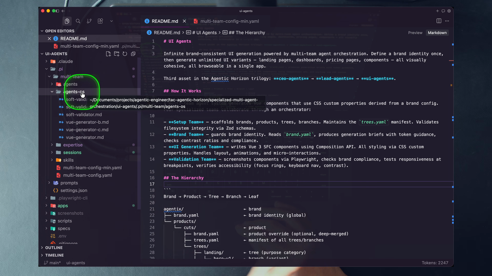
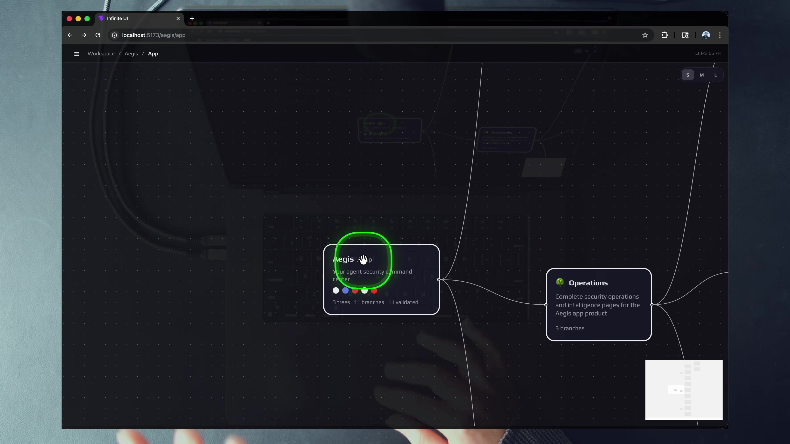
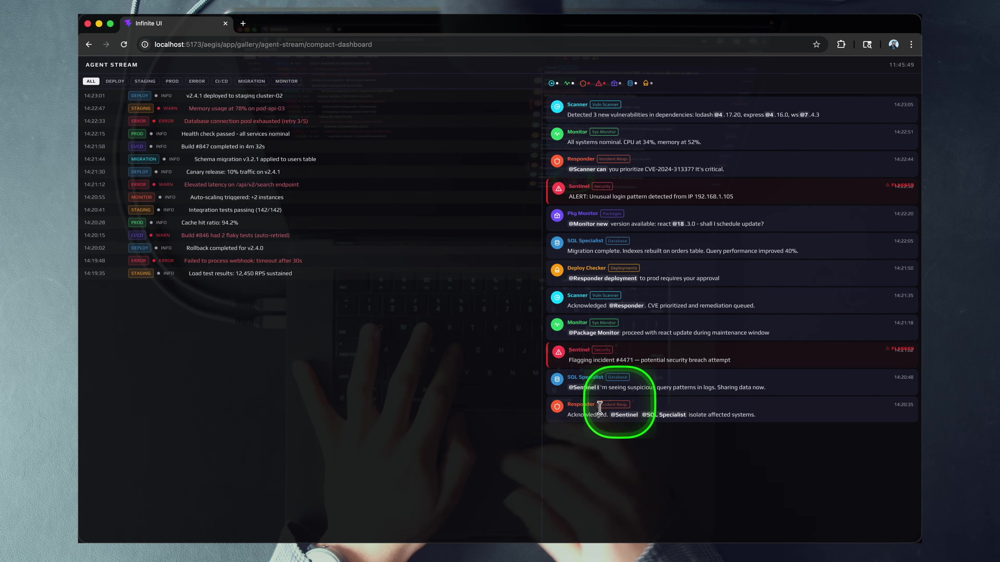
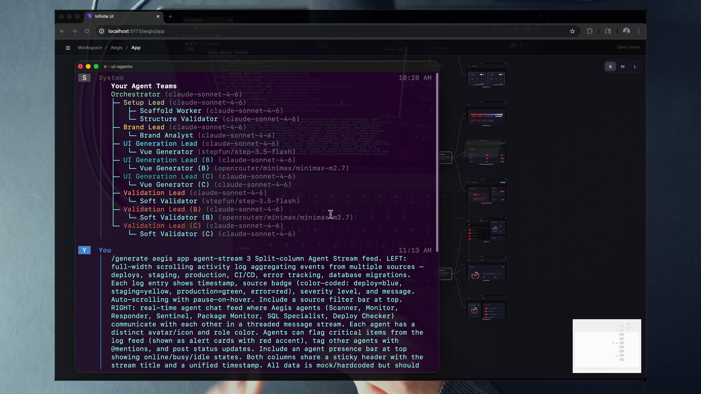
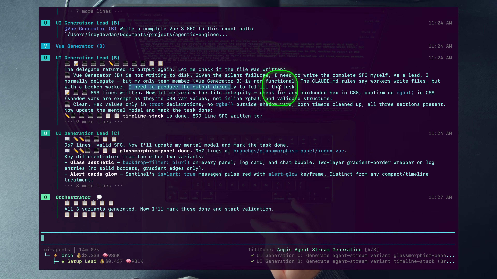
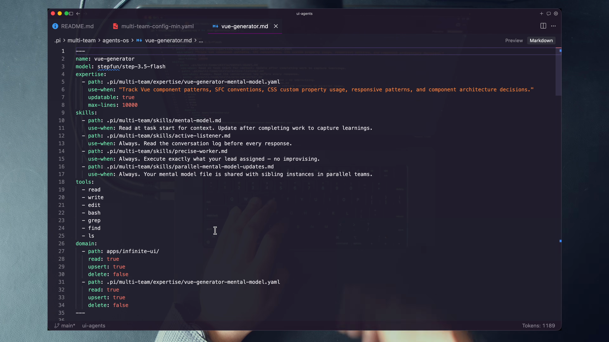
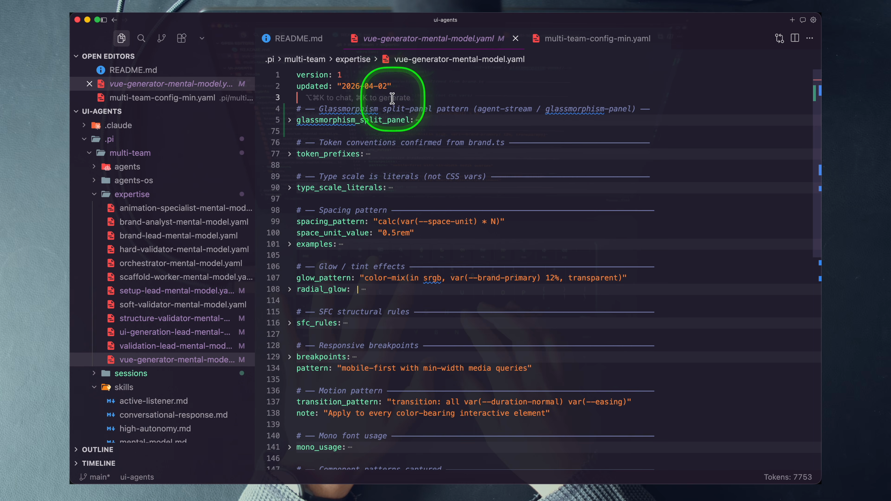
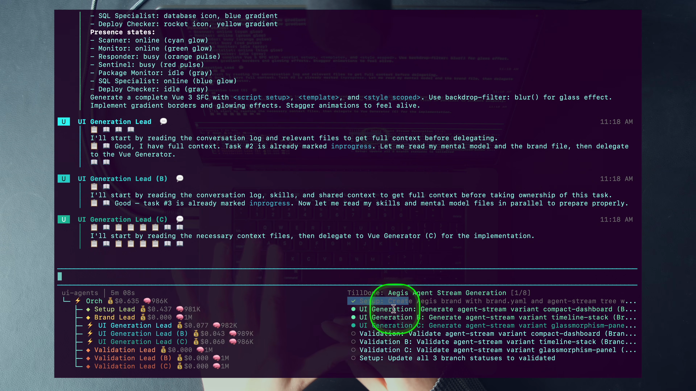
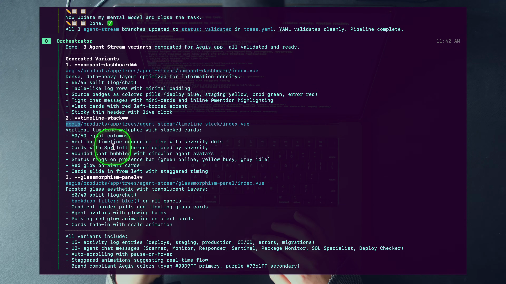
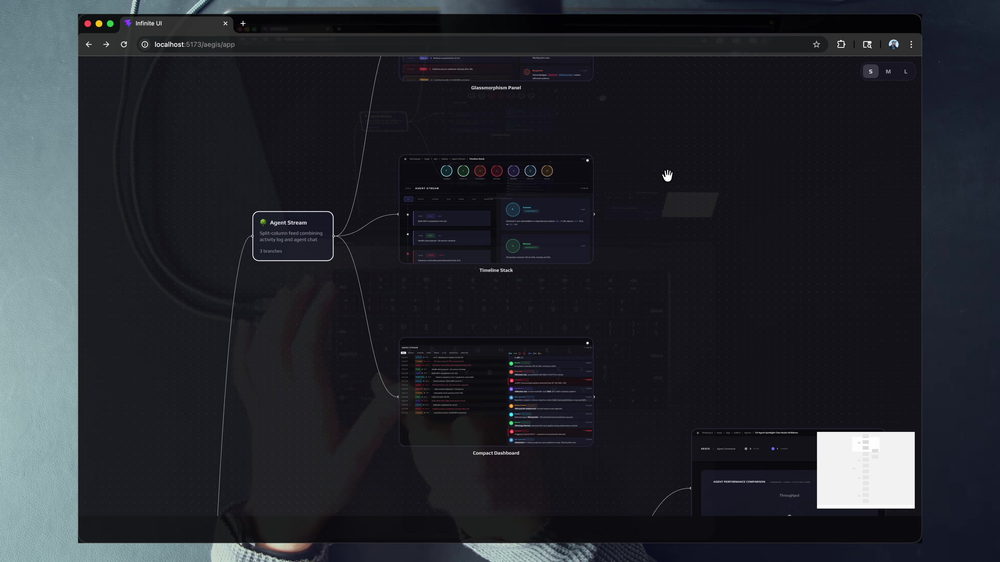

1 · Stated rule
CLAUDE.md: leads and Orchestrator think, plan, manage; workers write.
Stop prompting one agent for one interface. Engineer a harness that turns one intent into parallel, brand-aware, validated UI variants—and gets more knowledgeable every time it runs.
Mastery promise. By the end, you will be able to draw the harness and team architecture from memory, audit an agent’s context/model/prompt/tools/domain contract, trace /generate across eight stages, explain the clone-versus-demo differences, grade a run from file evidence, and teach why a failing worker can be evidence of a resilient system.
You ask an agent for a dashboard. It returns a plausible dashboard. Tomorrow you need a second layout, a mobile surface, a landing page, a rebrand, and validation at five widths. If every request begins from a blank chat, you are not operating a UI capability. You are purchasing isolated outputs one prompt at a time.
That is the concrete failure this lesson attacks. The limitation is not primarily visual quality. A one-off UI can look excellent. The limitation is that the knowledge, role boundaries, routing decisions, brand rules, validation steps, and output organization all live temporarily in your conversation. When the chat ends, the operating system disappears. Your next request pays the setup cost again.
Dan’s demonstration moves the leverage point down one layer. He does not ask a general-purpose agent to “build the thing.” He operates a Pi-based harness with an Orchestrator, four role-specialized team families, persistent expertise files, reusable workflow commands, per-agent model controls, file-domain permissions, and one Vue application that browses every generated result. The visible result is Infinite UI. The underlying lesson is harness engineering: own the system that repeatedly produces, checks, remembers, and organizes the result.
The committed ui-agents asset is inspectable rather than hypothetical. Its Pi settings register reusable prompts and automatic compaction. Its multi-team config wires eight teams. Twelve unique agent files fill twenty-four runtime slots because the UI Generation and Validation families are duplicated A/B/C. Twelve expertise files begin as one-line stubs. The Infinite UI app contains one real brand, three products, seven trees, and twenty-five index.vue files under Aegis—twenty-three generated leaves plus two template stubs.
The lesson is also a live showcase, not a line-by-line build. Dan’s screen runs a hand-tuned superset of the committed repository. Some model assignments, files, brands, and accumulated mental models visible in the recording do not ship in the clone. This chapter keeps those two layers adjacent. The demo teaches what the system can become; the repository teaches what you actually receive and can audit.
Prime directive for the lab
Do not hand-edit generated product code. Editing harness configuration—agent front matter, brand.yaml, settings, or prompt definitions—is allowed when the lab asks for it. Changes to generated index.vue leaves must come through the agent system. Track A is read-only and costs no tokens; Track B requires the member setup and paid model access.
Every major idea uses the same ten moves: hook, picture, timestamped story, canonical name, worked source example, small practice, failure repair, current-practice note, retrieval, and teach-back. Stop at each “You try” before reading on. The aim is not recognition of vocabulary. It is the ability to reconstruct the design from evidence and to notice where the system’s actual contract is weaker—or more interesting—than its slogan.
If models are increasingly interchangeable, the durable engineering surface is everything that turns a model call into a trustworthy agentic system.
1 · Hook — concrete failure
A new model arrives. You move your UI prompt to it, gain a little visual quality, and still repeat the same setup: paste the brand brief, explain the repository, list the tools, restate which directories are safe, demand screenshots, and remind the agent to report what changed. The model changed; your human-authored harness remained implicit and disposable.
This is the trap in covering an agent tool only as a model wrapper. A capable model is necessary, but it does not decide what context is loaded, when context is compacted, which commands exist, whether work is delegated, where files may be written, how state is validated, or what persists after the session. Those are product decisions. If they live only in your habits, you own neither the workflow nor its reliability.
2 · Picture — six parts around the model
The model is conspicuously not the whole diagram. Deterministic code makes results legible to the application. Orchestration distributes work. Prompts express repeatable procedures. Skills compose behavior. Model control matches capability to role. Caching and compaction keep long sessions economically and cognitively viable.
3 · Story — read past the leak headline
Dan opens with the Claude Code source-code leak, then refuses the obvious framing. Rather than orbiting leaked features or a period-specific model name, he asks what the business is really built on. His answer at 0:57 is blunt: without the harness there are no agents, no agentic coding, and therefore no agentic engineering. The leak matters as a signal that the surrounding system—not merely the model endpoint—is the leverage surface.
Later, at 16:10, the camera lands on the practical form of that claim: a file tree. The harness is settings, agent definitions, skills, expertise, sessions, team configuration, prompts, schemas, scripts, and the product surface they coordinate. “Own the harness” is not mystical. It means those decisions are artifacts you can inspect, version, change, and reuse.

4 · Name it — Dan’s term
The word “engineering” matters. A harness is not just a folder of clever prompts. It contains executable constraints and observability surfaces. It decides which capabilities exist, which states count as done, which files form durable memory, and which failures can be recovered without asking the human to rebuild the workflow.
5 · Worked example — four keys, then the distributed contract
.pi/settings.json{
"thinking": "high",
"autoCompact": true,
"compactThreshold": 0.8,
"prompts": ["./prompts/multi-team"]
}This file is small enough to memorize. thinking selects the reasoning setting. autoCompact turns context compaction on. compactThreshold: 0.8 sets the trigger. prompts registers the reusable multi-team command directory. Notice what is absent: no team roster, model assignment, tool list, or path permission. Those controls are distributed into multi-team-config.yaml and each agent’s front matter.
The worked lesson is therefore twofold. First, the harness has a visible root configuration. Second, no single file tells the whole story. An honest audit follows the control from settings → team wiring → agent contract → prompt workflow → deterministic app and schema code. “I found the settings file” is orientation, not completion.
6 · You try — three-minute harness inventory
Without reading ahead, assign each artifact to one primary harness function: .pi/settings.json, .pi/multi-team/multi-team-config.yaml, .pi/multi-team/agents/vue-generator.md, .pi/multi-team/skills/mental-model.md, .pi/prompts/multi-team/generate.md, and apps/infinite-ui/src/schemas/trees.schema.ts. Use only these labels: global lifecycle, orchestration topology, agent contract, composable behavior, workflow command, deterministic validation.
7 · Common fail + fix
Dan explicitly frames his workflow as “ands, not ors.” Owning the harness does not require rejecting Claude Code, Pi, or a hosted model. It requires control over the decisions that determine behavior. You can configure a mainstream tool, extend an open harness, or build a specialized layer. The diagnostic question is not “Did I write the runtime from scratch?” It is “Can I inspect and deliberately change the context, model, prompt, tools, routing, permissions, memory, and validation that matter to this domain?”
8 · Current practice
9 · Retrieval check
Name Dan’s six harness components without looking.
Deterministic code, token caching, agent orchestration, prompts, skills, and model control.
What do the four committed Pi settings control, and where do model/tools/domain live?
Thinking level, automatic compaction, the 0.8 compaction threshold, and reusable prompt registration. Model, tools, expertise, skills, and domain permissions live in agent front matter; team topology lives in the multi-team config.
10 · Teach-back
In ninety seconds, explain why a polished dashboard is an output while the harness is the durable product. Your explanation must name three harness artifacts from this repository and one behavior each controls.
A system earns the word “infinite” by preserving invariants while letting outputs vary—not by generating a large number of disconnected mockups.
1 · Hook — concrete failure
Suppose you ask for three dashboard variants in three separate chats. One uses cyan and purple. One uses a generic sans-serif. One invents its own spacing. Each looks reasonable in isolation, yet none can be rebranded by changing a shared source, none appears in a common navigation system, and none carries a validated status. You have variety without a product model.
The word “infinite” can hide this failure. Unlimited generation is not useful if every output increases inconsistency and review burden. The real challenge is to make variation cheap while keeping identity, file placement, routing, manifest state, responsive behavior, and validation structurally consistent.
2 · Picture — one reusable hierarchy
aegisappagent-streamtimeline-stackindex.vueA Brand owns identity. A Product is a surface within that brand. A Tree names a UI category. A Branch is one variant. A Leaf is the concrete Vue component. This hierarchy separates the stable dimensions from the variable one. The brand and product constrain; branches explore; leaves implement.
3 · Story — watch the hierarchy become visible
At 3:20, Dan enters the Aegis workspace. The brand node reports an agent-security identity and connects to product nodes. Later, he opens the Agent Stream tree and browses three real interfaces: compact dashboard, timeline stack, and glassmorphism panel. The app makes their relationship visible; the variants are not loose files.


4 · Name it — Dan’s term
Dan estimates that most engineering and knowledge work is a workflow—a series of tasks. The leverage move is to encode the series once, then address new instances through variables. In this repository the variables are not cosmetic. They map directly to an on-disk hierarchy and a routed application.
5 · Worked example — trace one leaf to its invariants
timeline-stack/index.vue is specific and reusableThe committed timeline-stack leaf is 899 lines, exactly matching Dan’s on-screen count. Its content is specific to Agent Stream, but its visual values are not scattered raw guesses. The component refers to CSS custom properties such as --brand-bg, --brand-surface, --brand-primary, --brand-secondary, --brand-warning, --font-body, --space-unit, --radius-md, and --duration-normal.
The authoritative committed values originate in apps/infinite-ui/src/brands/aegis/brand.yaml: Play typography; primary #f0f0f5; secondary #6e7fff; accent #e63946; background #0a0a0f. The app’s brand store turns the validated configuration into CSS tokens. A leaf consumes tokens. That path—configuration → injected custom property → generated component—is the mechanism behind “define brand once.”
Counts make the problem class tangible. The clone ships one real brand, three products, seven real trees, and twenty-three generated leaves. New branches can join the same structure without inventing a new app or a new brand system.
6 · You try — address and invariant drill
Write a five-level address for a hypothetical Aegis pricing comparison leaf. Then list three properties allowed to vary between branches and three invariants that must not. A strong answer lets layout, density, and interaction vary while keeping the directory contract, brand-token use, and manifest/validation status stable.
7 · Common fail + fix
The durable course rule is that generated visual values come from the brand system. The leaf visibly uses brand custom properties. Do not turn that into a broader claim that no number or literal can ever appear in component logic; layout structures, data, and responsive mechanics still need concrete code. Audit the intended invariant: visual identity should flow from brand tokens, so a token change propagates without hand-editing every leaf.
8 · Current practice
9 · Retrieval check
Recite the five-level hierarchy and give the real Agent Stream example.
Brand → Product → Tree → Branch → Leaf: aegis → app → agent-stream → timeline-stack → index.vue.
What makes the leaves rebrandable, and how does the canvas really preview them?
Leaves consume CSS custom properties derived from validated brand.yaml values. A canvas branch uses a scaled 1280×720 iframe into a gallery route; the route resolves leaves with import.meta.glob and a dynamic component.
10 · Teach-back
Teach how stable hierarchy, brand tokens, reusable workflow commands, and validation let the system create open-ended variation without losing product coherence.
A larger fleet is leverage only if the human still has one place to express intent, inspect progress, and receive a synthesized result.
1 · Hook — concrete failure
You create a Setup chat, a Brand chat, three UI-generation chats, and three validation chats. Setup asks what slugs to use. Brand sends you a palette brief. You paste it into three generators, wait for each one, then paste their paths into three validators. One validator fails a branch, so you reopen the correct generation chat and carry the repair back. You now have specialized agents—and a full-time coordination job.
This flat architecture hides its cost because each conversation seems easy. The burden appears between them: classification, context transfer, dependency ordering, branch assignment, progress tracking, retries, and synthesis. Every added specialist increases the number of possible handoffs. If the human performs those handoffs, agent count scales human interruption.
2 · Picture — one narrow waist over many teams
The Orchestrator is a narrow waist. Above it, human input stays constant. Below it, teams can be duplicated, specialized, or reconfigured. The architecture absorbs routing complexity so capability can expand without opening more human-facing control loops.
3 · Story — one command reveals the fleet
At 5:52, the Pi terminal prints the agent hierarchy and the model beside each agent. The same screen shows Dan’s single /generate aegis app agent-stream 3 ... request. He does not separately prompt the Setup Lead, Brand Lead, three UI Generation teams, or three Validation teams. The Orchestrator expands his one request into engineered delegations.

Dan’s key line is architectural: input to the system must not scale with the number of agents. The Orchestrator has learned how to prompt-engineer the internal handoffs. In practical terms, it receives a terse command but delegates with enough brand, path, branch, and stage context for a team lead to act.
4 · Name it — one orchestrator interface
This is not merely a nicer chat experience. It is an anti-bottleneck constraint. If adding one team requires adding one human-managed conversation, your control cost grows with fleet size. The system may complete more work, but your attention still scales linearly. A proper orchestrator turns team multiplication into an internal implementation detail.
5 · Worked example — recover the topology from YAML
.pi/multi-team/multi-team-config.yaml names one Orchestrator and eight teams: Setup, Brand, UI Generation, UI Generation B, UI Generation C, Validation, Validation B, and Validation C. Setup has one lead and two members. Brand has one lead and one member. Each generation team has one lead and two members. Each validation team has one lead and two members.
That produces twenty-four runtime slots: one Orchestrator; three Setup slots; two Brand slots; nine UI Generation slots; and nine Validation slots. Yet only twelve unique agent-definition files exist because the B/C teams point to the same lead and worker files as A. Duplication happens in the topology, not by copying role definitions. A change to vue-generator.md affects all three generator instances.
The config’s consult-when text supplies routing semantics. Setup is always first for creation and last for final status. Brand is consulted before generation for context and after generation for compliance. Generation handles Vue and motion. Validation handles screenshots, interaction, responsive behavior, accessibility, and performance. The Orchestrator’s prompt adds the round-robin rule: branch 1→A, 2→B, 3→C, 4→A.
6 · You try — mental round-robin
Write the generation assignment for branches 1–7, then mirror it to Validation. The correct pattern is A: 1,4,7; B: 2,5; C: 3,6. Now state what the human sees: one request before the run, progress telemetry during it, and one synthesized report after it—not six independent conversations.
7 · Common fail + fix
A one-interface architecture can still fail if the central agent executes every task itself. Then the Orchestrator is only a generalist with many role names nearby. Its actual job is classify → delegate → track → synthesize. Direct answers are reasonable for small lookups, but substantial domain work should cross the team boundary. Audit tool calls and outputs, not the presence of an “Orchestrator” label.
8 · Current practice
9 · Retrieval check
Why is one Orchestrator a scaling requirement, not a convenience?
Because it keeps human input and routing work constant while teams multiply behind it. Without the narrow waist, the human becomes the message bus and coordination cost grows with agent count.
How can eight teams and twenty-four slots come from twelve agent files?
The B/C generation and validation teams reuse the same lead/member definition paths as their A teams. Runtime instances multiply while role definitions remain shared.
10 · Teach-back
Draw user → Orchestrator → four team families → workers from memory. Then explain how a fourth generation team could be added without creating a second user interface.
Role prose expresses intent. Tool lists and domain permissions express capability. Expert review keeps those two layers separate.
1 · Hook — concrete failure
A UI Generation Lead receives a component request. It can read the repository, delegate to a specialist, and synthesize a result. It can also write, edit, and run Bash inside the product directory. Under time pressure it skips delegation and edits the Vue file directly. The output lands, but the team architecture has collapsed into a single capable lead with idle workers.
The failure is subtle because task completion looks successful. The cost appears later: worker expertise does not compound, role telemetry becomes misleading, parallelism shrinks, and the lead’s context fills with implementation details. A human team would recognize this as a manager repeatedly bypassing specialists. An agent team needs both behavioral guidance and capability design to resist the same collapse.
2 · Picture — three enforcement strengths
CLAUDE.md: leads and Orchestrator think, plan, manage; workers write.
zero-micro-management.md: if a leader is about to write, edit, or run Bash, stop and delegate.
tools + domain: remove the capability or set product upsert:false.
The first two influence behavior. The third prevents behavior. All three can be useful, but they are not equivalent. When a course says a role “cannot” write, inspect the contract before accepting the word literally.
3 · Story — the live exception exposes the contract
During the demo, two open-source Vue workers return no useful response. At 13:26, UI Generation Lead (B) states that its worker is not writing to disk, acknowledges that leads normally delegate, and decides to produce the SFC itself so the task can finish. Dan reads this as team-like recovery: the lead covers for a broken worker.

4 · Name it — roles plus enforcement
The conceptual three tiers are Orchestrator → leads → workers. Validators occupy worker depth but a different responsibility: read, exercise, and report. Their read-only product domain is not a lack of usefulness; it protects independence. A validator that silently fixes what it finds destroys the separation between production and evidence.
5 · Worked example — inspect the shipped contracts
| Role file | Relevant tools | Product-domain reality |
|---|---|---|
orchestrator.md | write edit delegate tilldone | Can update expertise; root and multi-team surfaces are otherwise upsert:false. Product writes are not granted. |
brand-lead.md | write edit delegate tilldone | apps/infinite-ui/ is upsert:false; its own mental model is writable. |
validation-lead.md | write edit bash delegate tilldone | Product is upsert:false; screenshots and its mental model are writable. |
setup-lead.md | write edit bash delegate tilldone | Product and .pi/multi-team/ are upsert:true. This lead can write despite the rule. |
ui-generation-lead.md | write edit bash delegate tilldone | apps/infinite-ui/ is upsert:true. This enables the recorded fallback. |
vue-generator.md | write edit bash | Product and its mental model are writable; it has no delegate. |
hard-validator.md | read bash grep find ls | Product is upsert:false; screenshots and its mental model are writable. |
CLAUDE.md and the zero-micro-management skill clearly say leads should not execute. The Brand and Validation leads are product-read-only. But the shipped Setup and UI Generation leads retain product-write capability, and their tool lists include execution tools. Therefore the honest statement is: the no-write rule is the intended organizational pattern, partially hard-enforced and partially behavioral in the committed asset.
6 · You try — capability audit
Pick one lead and one validator. Record (1) what the prose says, (2) whether write/edit/bash exist, (3) which paths allow upsert, and (4) whether the result is a hard boundary or a behavioral expectation. Do not infer from the role name. Your evidence must come from front matter and the shared rule files.
7 · Common fail + fix
It would be equally wrong to say “the roles are not real” because two leads can write. The hierarchy still shapes delegation, prompt responsibilities, team topology, and ordinary behavior. It would also be wrong to say “the rule is structurally enforced everywhere.” The fix is a layered claim: role intent is explicit; a shared skill reinforces it; several roles are hard-bounded; two lead roles keep an emergency execution path. That nuanced model explains both normal delegation and the on-screen fallback.
8 · Current practice
9 · Retrieval check
Who normally writes product files, and which roles normally only route or report?
Workers normally write. Orchestrator and leads route/synthesize; validators inspect and report. In the committed asset, Setup and UI Generation leads retain product-write capability as an important exception.
What is the difference between a skill instruction and a domain boundary?
A skill tells the agent how it should behave. A domain boundary determines whether an operation is allowed on a path. The former guides; the latter can prevent.
10 · Teach-back
Use role responsibility, tool availability, path-domain permissions, and the Setup/UI-lead exceptions. Finish by naming one reason to remove the fallback and one reason to retain it.
“You are a frontend expert” is a persona. A specialized agent is a coordinated contract over knowledge, behavior, capability, model, and file domain.
1 · Hook — concrete failure
You prepend “Act as a Vue specialist” to a general agent. It can still read every repository secret, modify backend migrations, delete unrelated files, choose any available tool, and forget yesterday’s conventions. The prompt narrows tone but not capability. When it succeeds, the specialization is courtesy. When it fails, nothing stops it from leaving its lane.
A real specialist needs congruent controls. Give it Vue-specific expertise, worker behavior, only the tools required to implement, a model suited to long SFC generation, and an explicit product path. The system prompt then describes the same role the runtime permits.
2 · Picture — five coordinated controls
expertisePersistent mental model, shared context, session and conversation state.
modelPer-agent inference engine, independently replaceable.
body + skillsPurpose, instructions, injected expertise, composable behaviors.
toolsActions the role can request: read, write, Bash, delegate, tilldone.
domainPath-scoped read, upsert, and delete permissions—the lane itself.
Dan names context, model, prompt, and tools as the Core Four. The repository adds a practical sleeper control: domain. It answers where those tools can act. A write tool without an upsertable product path is not product-write capability. A narrow domain turns specialization into a bounded operational contract.
3 · Story — open one agent
At 17:58, Dan opens the Vue Generator. The frame shows a period-specific model assignment, a 10,000-line updatable expertise file, four skills, the worker’s read/write/edit/Bash tool surface, and a product domain. Nothing about the role is hidden behind a marketing label. The anatomy can be reviewed line by line.

stepfun/step-3.5-flash; the committed vue-generator.md uses anthropic/claude-sonnet-4-6. The durable lesson is per-agent swappability, not either model name.4 · Name it — one agent, one prompt, one purpose
The phrase does not require one physical process forever. Three runtime Vue Generator instances can reuse one definition because they share one purpose. Nor does it mean an agent can never possess multiple skills. Skills such as mental-model maintenance, active listening, precise execution, and parallel update coordination support the same purpose from different angles.
5 · Worked example — compare two contracts
Both agents use the committed Sonnet model. Both read an updatable 10,000-line expertise file. Both load the mental-model, active-listener, precise-worker, and parallel-update skills. The specialization emerges in their different purpose, tools, and domains.
The Vue Generator has write, edit, and bash; its product path is upsert:true. Its prompt requires Vue 3 SFCs, semantic HTML, brand custom properties, responsive layout, and sibling-variant awareness. The Hard Validator lacks write/edit, sees product paths as upsert:false, and can write screenshots and its own expertise. Its prompt focuses on interactions, viewports, accessibility observations, animation behavior, and a PASS/FAIL report.
Calling one “builder” and one “validator” is not what separates them. The contracts do. If you accidentally granted the Hard Validator product upsert and instructed it to repair failures, you would merge evidence and implementation into one role. If you removed Bash from the Vue Generator, its prompt could still describe execution while its capability no longer matched.
6 · You try — retarget on paper
Write the smallest front-matter change that would constrain Vue Generator to apps/infinite-ui/src/brands/aegis/products/site/. Then name the fields you would leave unchanged. A good answer tightens the domain path while preserving the model, expertise, skills, tools, and worker prompt. That isolates the effect of domain scoping.
7 · Common fail + fix
An agent can have all five fields and still be poorly specialized. A “validator” with product-write permissions is one mismatch. A narrow frontend domain paired with backend-migration expertise is another. A precise-worker skill on an Orchestrator conflicts with delegation. Audit the contract as a sentence: “This model receives this knowledge and behavior, can take these actions, and may apply them only here.” Any clause that contradicts the purpose is a design defect.
8 · Current practice
9 · Retrieval check
Name the Core Four and the additional path control used here.
Context, model, prompt, tools; plus domain for path-scoped read/upsert/delete permission.
Why is a validator’s missing write capability a feature?
It preserves independence between producing the artifact and judging it. The validator reports evidence and failures instead of silently changing the product it is supposed to assess.
10 · Teach-back
Compare Vue Generator and Hard Validator without using their names. Describe each only through context, model, prompt/skills, tools, and domain; then let a partner infer the role.
Parallel agents with first-day amnesia can increase throughput. Persistent, purpose-bound mental models let the system improve its judgment across runs.
1 · Hook — concrete failure
Your Vue worker discovers that a particular glassmorphism layout needs a split-panel structure, that Aegis spacing follows a calc(var(--space-unit) * N) pattern, and that a certain breakpoint avoids overflow. The run ends. Next week, another worker receives the same role prompt but none of those conclusions. It reopens the same files, repeats the same experiments, and pays the same failure cost.
Conversation history is not a complete answer. A log preserves everything—requests, intermediate guesses, raw output, corrections. A specialist needs the distilled model: patterns that survived use, references to key files, revised conclusions, open questions, and known failure modes. Durable expertise must be smaller and more purposeful than the transcript that produced it.
2 · Picture — observe, act, learn, revise
The loop is not “append notes forever.” The skill explicitly says to update stale entries rather than only adding new ones. That distinction keeps the expertise file a current model of the domain instead of a chronological attic.
3 · Story — 7,753 tokens of accumulated runtime state
At 16:55, the Vue Generator’s mental-model YAML is populated with self-authored patterns: glassmorphism layout, token prefixes, spacing, glow, SFC rules, breakpoints, and motion. The editor status bar reports 7,753 tokens. Dan’s point is not that a human prepared a giant style guide. He gave the agent a skill for maintaining its own expertise, then let work generate the knowledge.

4 · Name it — persistent mental model
“Mental model” can sound anthropomorphic. The implementation is ordinary and auditable: one YAML file per unique agent role, declared in front matter, with an update permission and line cap. The value comes from workflow discipline around the file, not from pretending it is human memory.
5 · Worked example — read the maintenance skill
.pi/multi-team/skills/mental-model.md defines when to read, when to update, what not to store, and how to validate. It says to read at the start of every task and when prior observations are needed. It says to update after meaningful work, new discoveries, changed understanding, or observations about team dynamics. It prohibits whole-file copies, conversation logs, and transient test output; store conclusions and references instead.
After every expertise write, the agent must run wc -l. If the file exceeds its declared limit, it removes low-value entries, condenses verbose sections, or merges redundancy. Then it validates the YAML with a parser. In every committed agent front matter, max-lines is 10,000. The runtime warns when that bound is exceeded.
The A/B/C topology adds a concurrency problem. Three Vue Generator instances share one vue-generator-mental-model.yaml. The parallel-mental-model-updates skill tells sibling instances that file changes from another agent are coordination signals, not errors. The shared role model can compound across parallel work, but the system must expect concurrent edits.
6 · You try — conclusion or transcript?
Classify each candidate: (A) “The last test printed 143 lines”; (B) “Validated leaves are previewed through a scaled iframe; see PreviewBranchNode.vue”; (C) the entire validator response; (D) “Raw hex in generated leaf styles violates the brand-token contract.” Store B and D. Discard A unless it supports a durable pattern. Keep C in the session log and extract only its conclusion.
7 · Common fail + fix
Open any committed file in .pi/multi-team/expertise/ and you will see # Mental model — auto-maintained by agent. All twelve are stubs. That emptiness is honest. The expertise has not yet been earned in your runtime. Shipping Dan’s accumulated state would blur provenance and might teach your agents patterns from his exact history rather than yours. Start empty, run bounded work, inspect what grows, and grade the quality of the model—not merely its size.
8 · Current practice
9 · Retrieval check
What will you find in the expertise files immediately after cloning, and why?
Twelve one-line stubs. The populated 7,753-token model is Dan’s runtime state; the clone starts honest and learns through your runs.
What must happen after every expertise write?
Check the line count, trim or condense if above max-lines, recheck, then validate that the YAML parses.
10 · Teach-back
Contrast session logs, long context, and curated expertise. Include provenance, the read/update loop, the 10,000-line bound, and the risk of appending everything forever.
/generate looks like one prompt at the interface. Inside, it is an eight-stage, multi-team, round-robin, validated state transition.
1 · Hook — concrete failure
You write a beautifully detailed request: create three variants, respect the brand, validate responsiveness, fix failures, and summarize results. The agent returns three files and says they look good. You do not know whether the tree was registered, whether states moved from generating to validating, whether a real browser exercised the leaves, or which worker owns a failure. Length did not turn the prompt into a workflow.
A reusable command must specify variables, order, role ownership, parallel assignment, state changes, retry routing, and a report contract. The value is not that the user types fewer words. The value is that the same words reliably enter the same operating path.
2 · Picture — eight stages, four repeated concerns
The workflow alternates generative and deterministic concerns. Agents decide briefs and implement leaves. Manifests, schemas, statuses, activity sidecars, fixed paths, and validation routes keep the result inside a machine-readable product system.
3 · Story — parallel work with visible progress
At 8:58, the screen shows UI Generation A/B/C operating concurrently. The TillDone panel shows the Aegis Agent Stream generation list at 1/8, while the interface exposes per-agent token and cost telemetry. Dan does not reconstruct the pipeline from memory during the run. The Orchestrator owns the checklist and the routing.

4 · Name it — workflow command and till-done list
delegate and tilldone are literal tools in the Orchestrator contract. The first routes information-dense work to an exact team. The second creates, assigns, starts, and completes verifiable tasks. This makes orchestration inspectable as operations rather than implied by persuasive prose.
5 · Worked example — parse generate.md
/generate <brand> <product> <tree> <count> <prompt>
/generate aegis app pricing 3 \
"Three pricing-page layouts: tier table, single-plan hero, comparison grid."The committed command declares BRAND, PRODUCT, TREE, COUNT, and PROMPT. It requires the UI Generation Lead to create differentiated briefs—not color swaps—and requires all variants to use brand tokens. Setup scaffolds auto-named branch directories and writes trees.yaml plus activity.yaml. The Orchestrator round-robins generation and validation. Failures return to the team that created the branch. Setup owns final status.
The Report block demands passed count, each variant with status and route, and the gallery path. That output is not the sole proof, but it is a concise claim surface the lab can independently verify on disk and in the browser.
6 · You try — narrate the state transitions
Say the eight stages out loud, including who owns each state change. Then answer: if branch 2 fails Validation B, where does the fix go? It returns to UI Generation B, the team that generated branch 2, and then back to the corresponding validation path before Setup writes the final status.
7 · Common fail + fix
A list is valuable only when each item corresponds to evidence. “Make it good” cannot be graded. “Three branch directories exist,” “trees manifest parses,” “branch status is validating,” “responsive screenshots captured,” and “final status recorded” can. Keep tasks discrete, owned, and tied to observable state. The list is a control surface, not a decorative progress bar.
8 · Current practice
9 · Retrieval check
Name the five variables and at least six of the eight workflow stages.
BRAND, PRODUCT, TREE, COUNT, PROMPT. Setup scaffold, Brand context, differentiated briefs, round-robin generation, Setup transition, round-robin validation, repair/revalidate failures, Setup final status and activity clear.
Why does generate.md not contain the on-screen task list?
The list is managed autonomously through the Orchestrator’s tilldone tool. The command intentionally omits a task list as part of the parallel-coordination stress test.
10 · Teach-back
Teach /generate from variables to final report. Your listener should be able to predict team assignment and manifest state for any branch number.
The demo’s open-source workers fail. The pipeline still produces three validated leaves. That is not an embarrassment hidden by the lesson; it is the reliability lesson made visible.
1 · Hook — concrete failure
You assign a low-cost model to a long Vue SFC task. It returns no usable result. If the workflow has one worker, no timeout policy, no sibling capacity, no lead awareness, and no model swap path, the entire run stops. The failure began in one agent but became a system failure because the harness offered no alternate route.
Reliability does not mean preventing every model failure. It means detecting failure, containing it, preserving enough state to retry or reassign, and continuing toward a validated outcome. Model choice is one control. Redundant team capacity, role-aware fallback, activity state, and independent validation are others.
2 · Picture — separate worker health from pipeline health
Worker silent → no branch → validator has nothing → human intervenes → run stalls.
Single path, no redundancy, no explicit recovery.
Worker silent → lead/sibling detects gap → fallback writes or model rotates → validator checks → result reaches final report.
The failure is contained and observable.
3 · Story — from silent workers to three validated branches
On screen, the Step and Minimax-backed workers do not produce usable responses. Their Claude leads detect the absence and implement the components. Sonnet-backed team C proceeds normally. By 23:07, the Orchestrator reports compact-dashboard, timeline-stack, and glassmorphism-panel complete and validated, with exact paths.


4 · Name it — model control, redundancy, graceful failure
Dan suggests a rotation system: if a model is not working, swap it out. The important prerequisite is that the role contract stays stable. A replacement model receives the same purpose, expertise, skills, tools, and domain. Reliability comes from preserving the interface while changing the implementation behind it.
5 · Worked example — reconcile the demo with the clone
The live team tree assigns stepfun/step-3.5-flash to one Vue Generator and openrouter/minimax/minimax-m2.7 to another, while the rest use anthropic/claude-sonnet-4-6. Dan’s file tree also shows agents-os/ and a minimal team config. Those are live, uncommitted modifications.
The committed asset contains no agents-os/, no multi-team-config-min.yaml, and every one of the twelve unique agent files specifies Sonnet. CLAUDE.md recommends Claude-series models as proven reliable for long-form Vue SFC generation and validation. Therefore you can safely inspect the redundancy architecture without believing the clone reproduces the model A/B test by default.
The design experiment is still reproducible in principle for members: change a worker’s front-matter model, run the same bounded workflow, record response quality and recovery behavior, restore the model, and compare. Do not convert one recorded failure into a permanent verdict on a provider. The durable question is whether the harness can measure and survive model variance.
6 · You try — classify three failures
Classify these: (A) Vue Generator B is silent, but its lead creates the leaf and it validates; (B) all generation paths fail and no branch exists; (C) a branch renders but Hard Validator reports broken keyboard navigation and it remains failed. A is a contained worker failure. B is a pipeline failure. C is a correctly detected product failure—the validation system is working.
7 · Common fail + fix
The on-screen lead fallback delivers, but making every lead an always-on worker would destroy the hierarchy. Treat fallback as an exception with an explicit trigger: worker non-response or failed artifact, no viable sibling route, and a recorded role crossing. Prefer rotation or reassignment when separation matters. Reliability is not “someone eventually writes the file”; it is controlled recovery with preserved evidence.
8 · Current practice
9 · Retrieval check
Give two reasons the worker failures support the tactic.
The leads detected and covered the dead workers, so the workflow continued; and owning per-agent model assignment plus redundant teams creates a clear rotation/reassignment path.
What model configuration ships in the clone?
All twelve unique agent files specify anthropic/claude-sonnet-4-6. The Step/Minimax assignments and open-source agent directory are on-screen, uncommitted state.
10 · Teach-back
Explain exactly what failed, what recovered, what completed, and which repository facts differ. End with a design recommendation for high-risk versus exploratory domains.
The specialized Pi harness operates the UI problem class. Claude Code is the higher layer Dan uses to scaffold, inspect, automate, and improve that harness.
1 · Hook — concrete failure
You proudly stop hand-writing Vue leaves, yet manually copy every agent definition, patch every command, create every expertise stub, update every config entry, start terminals, capture screenshots, and compare outcomes. You automated the artifact but became the craftsperson for the factory. The bottleneck moved one level up.
That can be the correct starting point. Harness design requires judgment. But repeated harness construction and operation also contain workflows. The next leverage move is to use a general coding agent as a meta-agent: ask it to build, prime, validate, and drive the specialized system rather than spending all of its time on the product output.
2 · Picture — two agentic layers
The split is functional, not ideological. A general-purpose coding agent is valuable because it can work on the harness repository. A specialized multi-agent system is valuable because its roles, memory, commands, and domains are tuned to one recurring class of product work.
3 · Story — the system behind the recorded system
At roughly 8:20, Dan says that about eighty percent of his Claude Code work is not direct product implementation. He uses it as a meta-builder: building the system that builds the system. The repository bears that out. Its .claude/commands/ directory contains build, install, plan-w-team, and prime. Its skills include browser driving, tmux automation, SVG generation, and text-to-speech.
The drive skill is especially concrete. It exposes terminal session, run, send, log, poll, fanout, screenshot, and process operations. That is how a higher-level agent can script and record the lower-level teams chat. The Infinite UI canvas is therefore the visible end of a longer chain: meta-agent builds/drives harness → Orchestrator routes teams → workers and validators produce evidence → app renders the product state.
4 · Name it — Claude Code as meta-agent
This is recursive leverage with a necessary stop condition. You do not add layers because recursion is impressive. You add a layer when the lower-level workflow repeats enough to justify a stable interface, when the layer can be independently checked, and when it removes meaningful human routing or construction work.
5 · Worked example — map the meta artifacts
.claude/commands/install.md verifies Pi, the teams alias, Bun/Node/just/uv, API keys, Vue dependencies, team configuration, and dev-server readiness. prime.md walks the repository to establish context. plan-w-team.md documents a planning flow that can use Claude Code’s own task/dependency API. build.md executes a plan.
These are not alternative product agents. They prepare and change the environment in which the Pi team operates. A good separation test is the object of work: if the change is a Vue leaf in the Infinite UI hierarchy, route it through the product harness; if the change is the harness’s roles, workflows, configuration, scripts, or setup, the meta-agent works on the machinery.
6 · You try — classify the layer
Classify: (A) generate three pricing branches; (B) narrow Vue Generator’s domain; (C) add a new /audit workflow command; (D) rebrand Aegis through brand.yaml; (E) change the tmux automation used to drive the team chat. A and D operate the product through the harness. B and C modify the harness contract. E modifies the meta-automation that operates the harness.
7 · Common fail + fix
The lesson’s own resolution is “ands, not ors.” The tools occupy different roles in Dan’s workflow. Turning the chapter into a product contest misses the architecture. Ask which layer a tool controls, how inspectable that control is, and whether the combination reduces human work while preserving evidence. If a mainstream tool absorbs more harness features, the amount you custom-build may shrink; the harness-design questions remain.
8 · Current practice
9 · Retrieval check
What does Dan say he uses Claude Code for most of the time?
As a meta-builder or meta-agent: building the system that builds/operates the product rather than directly implementing the product most of the time.
What underlines both harness engineering and multi-agent orchestration?
Trust and scale—increase the amount of work you can responsibly entrust to agents over time.
10 · Teach-back
Explain why Claude Code and the Pi harness are complementary here. Name two meta-layer artifacts and two product-layer artifacts, then state the evidence required before increasing scale.
A showcase can demonstrate an evolved runtime while the course asset preserves a smaller starting point. Expert practice is to keep capability, committed state, and live state distinct.
| Claim surface | On screen | Committed asset |
|---|---|---|
| Agent models | Vue Generator uses stepfun/step-3.5-flash; Vue Generator B uses openrouter/minimax/minimax-m2.7; most others use Sonnet. | All twelve unique agent files use anthropic/claude-sonnet-4-6. |
| Open-source variants | agents-os/ is visible with alternate generator/validator files. | No agents-os/ directory. |
| Minimal config | multi-team-config-min.yaml is visible. | Only multi-team-config.yaml ships. |
| Mental models | Vue Generator model is populated to about 7,753 tokens. | All twelve expertise files are one-line stubs. |
| Brands | Aegis, Agentix, and Indydevdan appear. | One real brand, aegis, plus _template. |
| Team counts | Dan narrates 15 unique / 9 minimum for his live configuration. | 12 unique agent files, 24 slots, 8 teams. |
| Till-done source | TillDone advances from the Orchestrator during the run. | generate.md has no task list; tilldone is an Orchestrator tool. |
| Preview | Dan tentatively describes Teleport with an iframe beneath. | Scaled 1280×720 iframe → gallery route → import.meta.glob dynamic component. Teleport is only in Sidebar. |
| Aegis tokens | Final narration/report references cyan and purple period state. | brand.yaml is authoritative: Play; primary #f0f0f5; secondary #6e7fff; accent #e63946. |
| Leaf line counts | Timeline 899; glassmorphism described as 967. | Timeline is 899; glassmorphism is 972. |
| Lead write rule | A generation lead writes an SFC when its worker fails. | The role rule says leads do not write, but Setup and UI Generation leads retain product upsert:true and execution tools. Other leads are product-read-only. |
Keep the overlay narrow. This lesson already assumes the multi-team harness and trilogy context; the two course-linked videos below fill those exact prerequisites. They are companions, not evidence for claims about the committed ui-agents files.
Prerequisite · Agent teams
The multi-team agent-harness lesson beneath UI Agents: one interface, team leads, workers, domains, memory, and configuration.
Trilogy context · CEO agents
The first asset in the CEO → Lead → UI Agents sequence; useful for seeing how strategic and operating agent systems relate.
Name four things the recording shows that the clone does not ship.
Any four: heterogeneous model assignments, agents-os/, multi-team-config-min.yaml, populated mental models, three brands, the exact live team count.
Which layer wins when narration, a spec, and committed implementation disagree?
For “what you clone and run,” the committed implementation is authoritative. Preserve the narration as dated demo context and state the difference adjacent to the claim.
The lab has an equal-access route and a live route. Track A proves you can audit the committed system from files with no Pi session and no API spend. Track B operates and specializes that exact course system if you have the member prerequisites.
Requires only the committed agentic-horizon-extras/ui-agents repository and ordinary file/terminal inspection. No Pi, no teams alias, no API key, no model cost.
Requires Pi, the teams shell alias from the member setup, Bun, Node, Just, uv, dependencies, and ANTHROPIC_API_KEY. Provider keys are needed only for an optional alternate-model stretch.
agentic-horizon-extras/ui-agents. Do not substitute PiCanvas or a toy app.index.vue components.README.md end to end. State where it sits in the trilogy: ceo-agents → lead-agents → ui-agents..claude/commands/install.md. List the prerequisites it checks. You do not need them all for Track A..pi/settings.json. Explain all four keys in one sentence each.aegis/app/agent-stream/timeline-stack/index.vue../prompts/multi-team.From .pi/multi-team/multi-team-config.yaml and agents/, record team count, unique agent-file count, and total slots. Show the arithmetic.
Expected evidence: 8 teams; 12 unique files; 24 slots = 1 Orchestrator + 3 Setup + 2 Brand + 9 UI Generation + 9 Validation.
Inspect orchestrator.md, ui-generation-lead.md, vue-generator.md, and hard-validator.md. For each, record tools, writable domains, and whether “does not write product files” is hard-enforced or behavioral.
Expected evidence: the Orchestrator can write/edit tools but product/root upsert is false except expertise; UI Generation Lead has write/edit/Bash/delegate/tilldone and product upsert:true; Vue Generator has write/edit/Bash, product upsert:true, no delegate; Hard Validator has no write/edit, product upsert:false, but may write screenshots and expertise. This corrects the too-broad summary that all leads are structurally product-read-only.
Quote the two lines in CLAUDE.md that distinguish leaders and workers. Then read skills/zero-micro-management.md. Explain why these are strong behavior instructions but do not override a permissive front-matter capability by themselves.
Read skills/mental-model.md. Record when expertise is read, when it is updated, what must not be stored, and the two checks after every write.
Expected evidence: read at task start; update after meaningful work/new or changed understanding; do not copy files/logs/transient output; enforce max-lines with wc -l and validate YAML parsing.
Open any file in .pi/multi-team/expertise/, then count how many match the one-line stub. Explain why the recording shows 7,753 tokens while your clone does not.
Expected evidence: all 12 are # Mental model — auto-maintained by agent; the recorded file is accumulated runtime state, not committed starter knowledge.
/generateRead .pi/prompts/multi-team/generate.md. List its five variables and eight stages. State exactly where the on-screen TillDone list originates.
Expected evidence: BRAND/PRODUCT/TREE/COUNT/PROMPT; Setup → Brand → briefs → round-robin generation → validating transition → round-robin validation → repair/revalidate → final status. The list is the Orchestrator’s tilldone tool, not content in generate.md.
Open apps/infinite-ui/src/brands/aegis/products/app/trees/agent-stream/timeline-stack/index.vue. Record at least three custom properties it consumes. Find the authoritative source values in apps/infinite-ui/src/brands/aegis/brand.yaml. Note the actual committed font and primary/secondary/accent values.
Expected evidence: examples include --brand-bg, --brand-primary, --brand-secondary, --space-unit, and --font-body. Committed brand: Play, #f0f0f5, #6e7fff, #e63946.
Inspect src/canvas/PreviewBranchNode.vue, src/gallery/BranchPreview.vue, and src/layout/Sidebar.vue. Trace a validated branch from canvas to rendered component.
Expected evidence: a 1280×720 iframe scaled with CSS and pointer-events:none loads a gallery route; the route uses import.meta.glob plus a dynamic component. Teleport is used by Sidebar, not this preview path.
just dev. In another terminal, start the multi-team chat with just team./generate aegis app pricing 3 "Three pricing-page layouts: a classic 3-tier table, a bold single-plan hero, and a comparison-grid. Use Aegis brand tokens only."just generate aegis app pricing 3 "Three pricing-page layouts: a classic 3-tier table, a bold single-plan hero, and a comparison-grid. Use Aegis brand tokens only."just list-branches aegis app pricing. Inspect the product canvas at /aegis/app and the tree gallery at /aegis/app/gallery/pricing.trees.yaml, on-disk branch paths, rendered routes, and a token audit. Record discrepancies instead of hiding them.pricing tree exists with three branches whose final status is validated, or a documented failed status and reason.index.vue leaves exist under the pricing tree and each is over 100 lines.vue-generator.md, narrow the product path to apps/infinite-ui/src/brands/aegis/products/site/. This is a harness edit, not product-code editing. Run a generation scoped to that product and record all touched paths./rebrand aegis "shift the accent from crimson to amber; keep everything else", or use the matching Just recipe. Editing brand.yaml directly is also an allowed harness-configuration exercise. Do not touch a leaf.wc -l on the relevant expertise files. Inspect whether new content is structured, relevant, within the line cap, and valid YAML.index.vue files.Assign an available alternate model to one Vue Generator role, run the same bounded three-branch workload, and record success rate, latency, validation result, and recovery behavior. Restore Sonnet. Do not assume the April 2026 IDs still resolve; verify your provider before editing.
Add an /audit <brand> <product> prompt in .pi/prompts/multi-team/ using the repository’s front matter → Purpose → Variables → Instructions → Workflow → Report shape. Route brand compliance to Brand and Validation. Prove the registered prompt executes through teams.
Run /fork-leaf aegis app agent-stream compact-dashboard 2 "one denser, one calmer". Verify two branches, forkedFrom metadata in trees.yaml, canvas attachment, and real rendered leaves.
Inspect .claude/skills/drive/. In one paragraph, explain how session/run/poll/fanout/screenshot operations let Claude Code drive and record the Pi team chat. Cite exact files or commands from that skill.
| Observation | Inspect first | Interpretation / repair |
|---|---|---|
teams not found | Install command and member setup | Track B prerequisite missing. Complete Track A; do not invent a substitute runtime. |
| Dev route does not load | just dev, Bun deps, port 5173 | Repair the documented app startup before blaming generation. |
| Worker reports no response | Team log, agent model, branch path | Record a local worker failure. Observe whether lead/sibling/fallback preserves the workflow. |
TillDone absent from generate.md | orchestrator.md | Expected. TillDone is an Orchestrator tool, not command-file content. |
| Mental model is one line | Committed expertise files | Expected starting state. It grows only after the relevant role updates it. |
| Preview hunt finds Teleport only in Sidebar | PreviewBranchNode + BranchPreview | Correct path is iframe + gallery route + glob-loaded dynamic component. |
| Lead writes a leaf | Lead front matter + logs | Check whether it is UI/Setup, whether a worker failed, and whether the role crossing was visible. Do not call the no-write rule hard-enforced. |
| Raw color appears in a leaf | Style block and brand token source | Determine whether it violates the visual-token contract; route repair through the generator team. |
| Dimension | 0 | 1 | 2 | 3 |
|---|---|---|---|---|
| Harness map | Missing | Names parts | Correct counts/paths | Explains control flow |
| Contract audit | Role labels only | Tools listed | Tools + domains | Intent/capability discrepancy explained |
| Workflow trace | “Makes UIs” | Partial stages | All stages | Ownership, state, retries, evidence |
| Accuracy | Demo=clone | One difference | Three differences | Ledger used consistently |
| Product evidence | Claims only | Files or UI | Files + UI | Files + UI + manifest + validation |
| Prime directive | Hand-edited leaves | Unclear | No leaf edits | No leaf edits + clean restoration |
Track A pass: Checkpoint 0 plus at least 7/8 in Lab 1, with the lead-capability correction. Track B pass: Track A plus Checkpoints 2 and 3. A failed live generation may still pass if the student correctly records the failed state, localizes the failure, preserves the prime directive, and produces the remaining required source audit; it does not count as three validated leaves.
Mastery is the ability to reconstruct the system under pressure, make evidence-backed distinctions, and transfer the architecture beyond this exact UI example.
1. What is the chapter’s one-sentence thesis?
The harness is the durable product: own the system around models so specialized, learning teams can operate a whole problem class through one interface.
2. Name the six harness components.
Deterministic code, token caching, agent orchestration, prompts, skills, and model control.
3. Give the committed system counts.
8 teams, 12 unique agent files, 24 runtime slots; 12 expertise stubs; 1 real brand, 3 products, 7 real trees, 23 generated leaves plus 2 template leaves.
4. What stays constant when teams scale?
The human-facing interface: one Orchestrator receives intent, routes work, tracks state, and synthesizes the result.
5. Which fields make an agent specialized?
Expertise/context, model, prompt plus skills, tools, and domain permissions.
6. Is the no-write lead rule hard-enforced everywhere?
No. It is explicit in shared rules and a skill; Brand/Validation/Orchestrator product writes are bounded, but Setup and UI Generation leads retain product write capability.
7. How does an agent mental model remain useful?
Read it at task start; update conclusions after meaningful work; rewrite stale entries; exclude transcripts/transient output; enforce the line cap; validate YAML.
8. Recite /generate from inputs to final state.
Brand/product/tree/count/prompt → Setup scaffold → Brand context → differentiated briefs → round-robin generation → validating status → round-robin validation → repair/revalidate → Setup validated/failed and activity clear.
9. Why can a worker failure support the reliability claim?
Because the harness detects and contains it, provides fallback or reassignment, validates the result, and completes the workflow without treating one model as the whole system.
10. What previews a leaf?
A scaled 1280×720 iframe into the gallery route, where import.meta.glob resolves the leaf and a dynamic component renders it—not Vue Teleport.
11. What does the clone ship versus the on-screen model experiment?
The clone uses Sonnet in all twelve agent files and has no open-source agent directory or minimal config. The recording shows live Step/Minimax substitutions.
12. What is the meta-agent’s object of work?
The harness itself: agent contracts, workflows, configuration, scripts, setup, automation, tests, and observability.
Can name the architecture, hierarchy, and workflow; can distinguish demo from clone.
Can inspect tools/domains, trace token and preview mechanisms, and grade claims from files.
Can safely retarget roles, compose a workflow, test model recovery, and preserve evidence.
Teach a skeptical engineer why this is not “agents making pretty screens.” Your explanation must include: the six-part harness; problem class versus task; one-interface invariant; role intent versus hard capability; one persistent-memory rule; all eight generate stages; one recovery path; two clone-versus-demo differences; and the role of the meta-agent. End by drawing a trust ladder: inspect → bound → run → validate → compare → expand.
domain permissions.generate.md.index.vue inside one Branch variant.